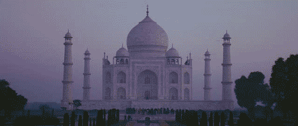

The Ultimate Guide to the Taj Mahal in India

The Taj Mahal looms fairytale-like from the banks of the Yamuna River.
It's India’s most recognized monument and is also one of the Seven Wonders of the World.
The monument dates back to 1632 and is actually a tomb that contains the body of Mumtaz Mahal—the wife of Mughal emperor Shah Jahan.
He had it built as an ode to his love for her. It's made out of marble and took 22 years and 20 000 workers to complete.
Words cannot do the Taj Mahal justice, its incredible detail simply has to be seen to be appreciated.
Location
Agra, in the state of Uttar Pradesh, approximately 200 kilometers (125 miles) from Delhi.
It's part of India's popular Golden Triangle Tourist Circuit.
When to Go
The best time is from November to February, otherwise it can be unbearably hot or rainy.
You'll be able to get some excellent off-season discounts though.
The Taj Mahal appears to gradually alter its color in the changing light of the day.
It’s well worth the effort to get up early and spend sunrise there, as it majestically reveals itself.
Visiting around dawn will also enable you to beat the huge crowds that start arriving later in the morning.
Getting There
The Taj Mahal can be visited on a day trip from Delhi.
Agra is well connected by rail. The main railway station is Agra Cantt.
High speed Shatabdi Express services operate from Delhi, Varanasi, and cities in Rajasthan.
Opening Hours
The Taj Mahal opens 30 minutes before sunrise and closes 30 minutes before sunset, usually around 6 a.m. to 7 p.m. every day, except Friday (when it's closed for prayer).
The Taj Mahal is also open for night viewing every full moon from 8.30 p.m. until 12.30 a.m., plus two days before and two days after the full moon (a total of five days).
Night viewing is suspended during the holy month of Ramadan every year.
Entry Fees and Information
For foreigners, the ticket price is 1,100 rupees and for Indians, the price is 50 rupees.
Children younger than 15 years can enter free.
Tickets can be purchased at ticket offices near the entry gates.